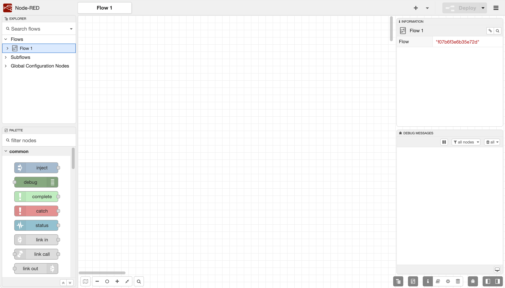

Bausteine statt fest verdrahteter Logik
Nodes lesen Werte, reagieren auf Ereignisse, verändern Nachrichten oder geben Ergebnisse an andere Systeme weiter. Die Verbindungen zwischen ihnen bilden den Flow und machen die Reihenfolge sichtbar.
Für eigene Automationen
Node-RED kann lokale APIs, MQTT, HTTP und zahlreiche zusätzliche Nodes verbinden. Welche Erweiterungen sinnvoll und sicher sind, hängt von der konkreten Anlage ab. Fremde Nodes besitzen eigene Update- und Lizenzbedingungen.
Auf eHive One nur mit 2 GB
Node-RED ist auf eHive One der Variante mit 2 GB Arbeitsspeicher vorbehalten. Umfangreiche Flows, viele Zusatzmodule oder weitere parallel laufende Plattformen erhöhen den Ressourcenbedarf.
Wichtig: Flows vor produktiver Verwendung testen, sichern und gegen unbeabsichtigte Schreibzugriffe absichern.